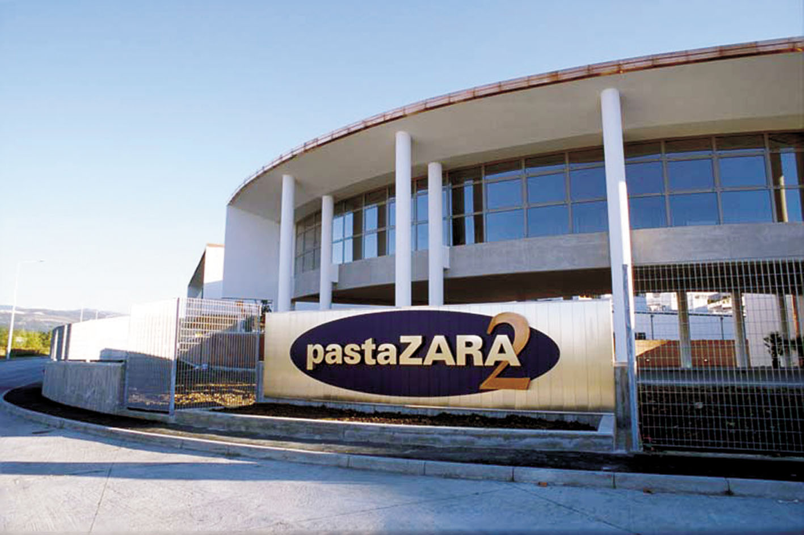

By putting together the properties of whole wheat pasta and the safety of organic pasta and we obtain Pasta ZARA whole wheat organic pasta. The best of authenticity,using only Italian durum wheat from organic agriculture (where pesticides and chemical treatments are banned), milled slowly at uniform temperature, and then dried slowly at low temperature. The result is a complete, balanced, tasty and nourishing product.
ORGANIC WHOLE-WHEAT Eating healthy, but tasty. The values of whole wheat combined with the nature of durum wheat from organic agriculture.

